Rio Paraná e Rio Tietê
13 espécies catalogadasAs principais bacias de navegação e pesca de grande porte da região concentram grande variedade de peixes nobres e de couro:
A Região Turística Pantanal Paulista é privilegiada por grandes rios de águas cristalinas. Confira o levantamento das espécies de peixes presentes em cada um dos nossos rios.
As principais bacias de navegação e pesca de grande porte da região concentram grande variedade de peixes nobres e de couro:

Corredeiras límpidas e braços de rio perfeitos para a prática da pesca esportiva e ecoturismo:

Afluentes preservados e calmos que alimentam a rica biodiversidade aquática da rota:
Resumo de cada peixe da região. Nomes populares mudam de rio para rio; quando uma espécie não pôde ser confirmada, isso está dito.

Salminus brasiliensis
Predador de topoUm dos maiores peixes de escamas da América do Sul: pode passar de 1 metro e de 30 kg. O nome vem do brilho dourado do corpo. É um predador que se alimenta de outros peixes e um dos troféus mais cobiçados da pesca esportiva.
Onde ocorre: Bacias dos rios Paraná, Paraguai e Uruguai.
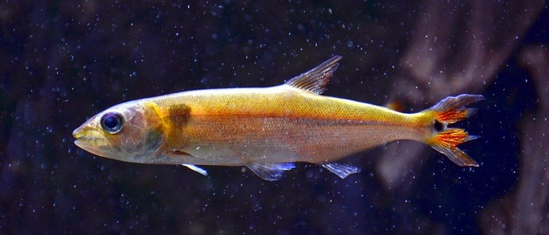
identificação científica não confirmada
Nome regionalNome popular usado na região nos levantamentos do Pantanal Paulista. Não encontramos fonte científica que ligue este nome a uma espécie específica, então preferimos não arriscar um nome científico nem uma descrição. Se você conhece a espécie, ela pode ser corrigida pela área administrativa.
Onde ocorre: Citado para o Rio São José dos Dourados e para os rios Grandinho e Pântano.
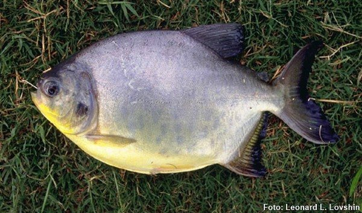
Piaractus mesopotamicus
Quase ameaçado (IUCN)Peixe robusto, de corpo alto e achatado, cinza-escuro a prateado, com o peito amarelado. Adulto, entra nas matas alagadas para comer frutos e sementes que caem das árvores. Chega a cerca de 50 cm e até 20 kg e é muito usado em pesca esportiva e piscicultura.
Onde ocorre: Bacia Paraguai-Paraná.
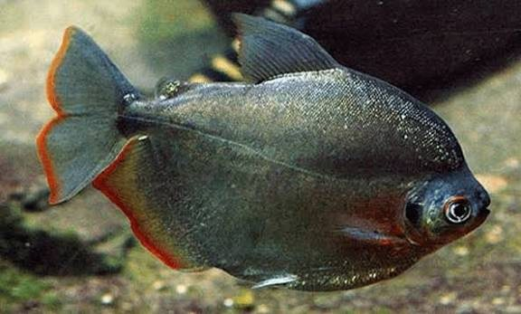
gênero Myloplus (e parentes)
Nome popular amplo“Pacu-prata” é um nome popular dado a pacus de corpo prateado e achatado, e não a uma única espécie. Em estudo recente com a bacia do Prata (Paraná e Paraguai), só duas espécies do gênero Myloplus foram reconhecidas: M. tiete e M. levis. Ambas têm descrições antigas e muito parecidas entre si.
Onde ocorre: Bacia do Prata (Paraná-Paraguai).
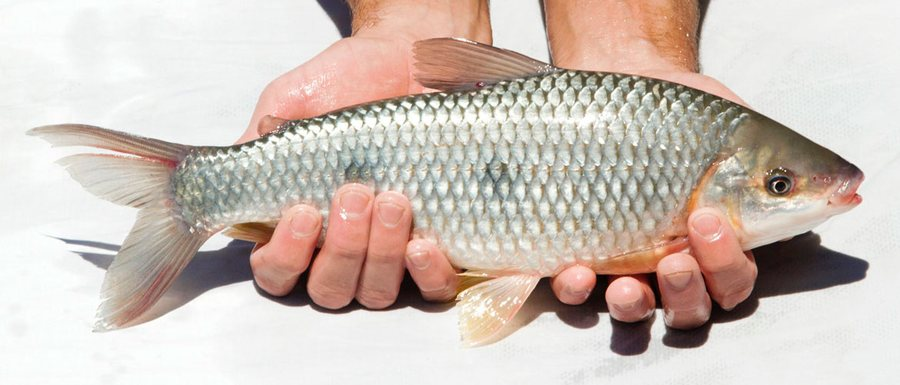
Megaleporinus elongatus
Peixe de piracemaPeixe de corpo alongado da família dos piaus, que migra rio acima para se reproduzir (potamódromo). Pode chegar a cerca de 50 cm. Está classificado como “pouco preocupante” pela IUCN.
Onde ocorre: Bacias do Paraná e do Prata, segundo o FishBase.
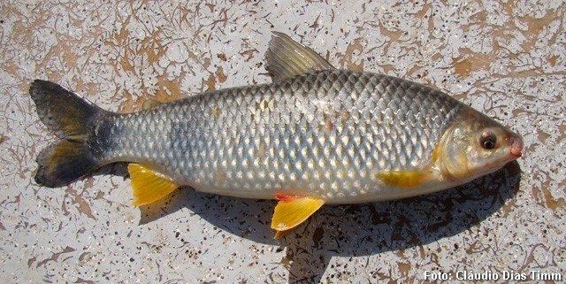
gêneros Leporinus e Megaleporinus
Nome popular amplo“Piau” (ou “piava”) é o nome popular de vários peixes de corpo alongado, muitos com manchas escuras, da família Anostomidae. O nome “piavuçu”, por exemplo, indica um piau grande. Por isso, o piau do seu rio pode ser de espécies diferentes das de outro rio.
Onde ocorre: Alto rio Paraná (para o piavuçu, Megaleporinus piavussu, endêmico do alto Paraná).
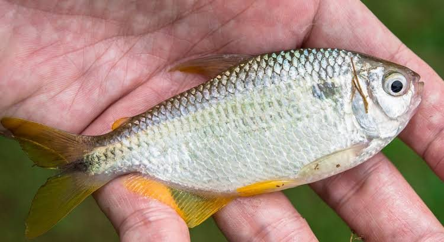
gênero Astyanax e parentes
Nome popular amploPeixes pequenos, de cardume, muito comuns em rios e lagoas. São a base da cadeia alimentar: alimentam peixes maiores, como a traíra. “Lambari” cobre muitas espécies, sobretudo do gênero Astyanax.
Onde ocorre: Presente em quase todos os rios da região.
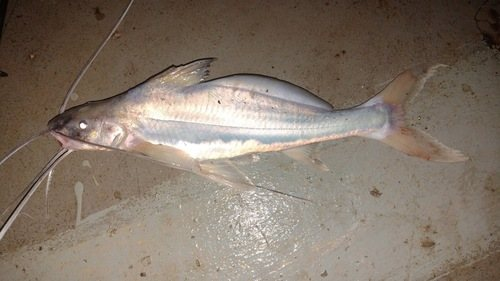
bagres de barbilhões longos (família Pimelodidae)
Nome popular amploNome popular de bagres da família Pimelodidae, reconhecidos pelos barbilhões compridos perto da boca. Esses peixes de couro vivem perto do fundo. Como o nome muda de rio para rio, o FishBase é usado aqui como referência de uma espécie parente (Pimelodus maculatus).
Onde ocorre: Bacia do Paraná.
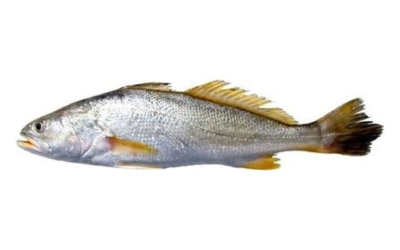
Plagioscion squamosissimus
Não nativa do alto ParanáChamada de pescada em partes da Amazônia, é predadora e come peixes. Chega a cerca de 80 cm. Sua origem é amazônica e do Orinoco: no alto rio Paraná ela é considerada não nativa, introduzida por sua importância comercial.
Onde ocorre: Amazonas, Orinoco, Paraná, Paraguai e São Francisco (hoje espalhada por reservatórios).
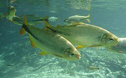
Brycon orbignyanus
Criticamente em perigo — pesca proibidaO nome vem do tupi e quer dizer “peixe de cabeça amarela”. É uma espécie migratória, só encontrada nas bacias do Paraná e do Uruguai, com carne rosada. A população caiu pelo menos 80% em 30 anos, sobretudo por causa das barragens. Hoje está na lista nacional de espécies ameaçadas: capturar, transportar e vender exemplares silvestres é proibido.
Onde ocorre: Bacias dos rios Paraná e Uruguai.
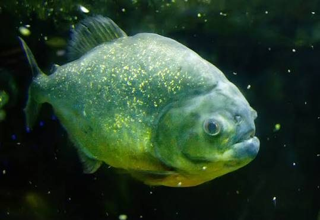
Serrasalmus maculatus (piranha-amarela)
Cuidado ao entrar na águaA piranha-amarela vive em pequenos grupos, perto da vegetação, e come principalmente pedaços de nadadeiras e músculo de outros peixes. Chega a cerca de 26 cm. Costuma haver mordidas em banhistas em represas na época de reprodução, quando os adultos defendem os ninhos e os filhotes.
Onde ocorre: Bacias amazônica e Paraguai-Paraná.
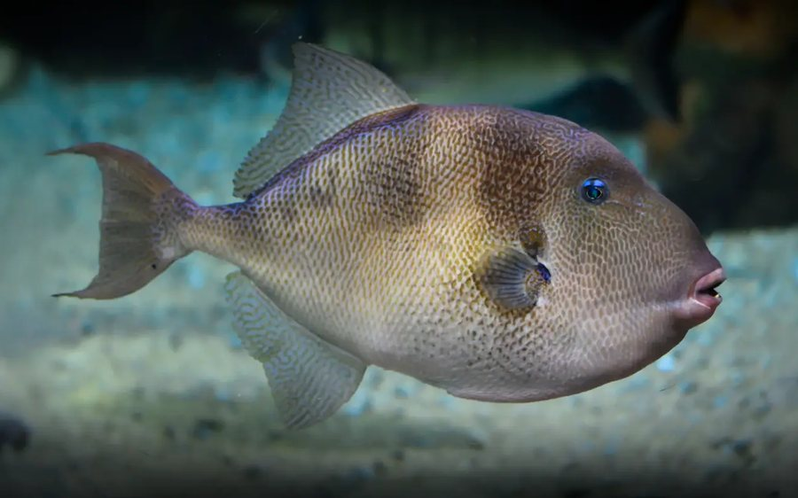
identificação científica não confirmada
Nome regionalNome regional usado nos levantamentos das bacias da região. Não encontramos fonte científica que ligue este nome a uma única espécie, então não colocamos nome científico nem descrição inventada. A informação pode ser completada pela área administrativa.
Onde ocorre: Citado para as três bacias da região.
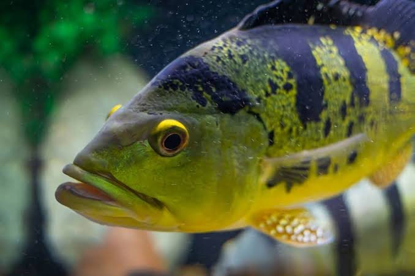
Cichla kelberi e Cichla piquiti
IntroduzidoPeixe amazônico, lutador, muito procurado na pesca esportiva. Nos rios e represas da bacia do Paraná ele foi introduzido: estudos genéticos confirmaram duas espécies, o tucunaré-amarelo (C. kelberi) e o tucunaré-azul (C. piquiti), e também híbridos entre elas.
Onde ocorre: Nativo da Amazônia; introduzido na bacia do Paraná.

Hoplias malabaricus
Pouco preocupante (IUCN)Predadora de emboscada, de corpo alongado e dentes fortes, que passa o dia entre a vegetação e caça à noite. Os machos cuidam do ninho mesmo depois de os ovos eclodirem. Chega a cerca de 65 cm e mais de 3 kg e é um peixe de pesca esportiva e comercial. Peixe vivo exige cuidado ao manusear: dentes afiados e corpo escorregadio.
Onde ocorre: Quase todas as bacias, da Costa Rica à Argentina.
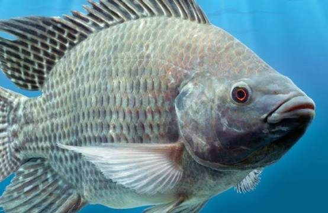
Oreochromis niloticus (tilápia-do-nilo)
Introduzida (invasora)Origem africana. É a tilápia mais criada no mundo, mas em rios e represas brasileiras ela é espécie introduzida e pode competir com os peixes nativos. Por isso não deve ser solta em rios e lagoas.
Onde ocorre: Nativa da África e do Oriente Médio; introduzida em muitos países.